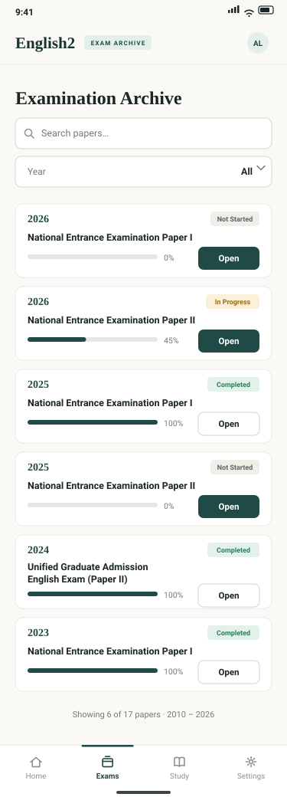
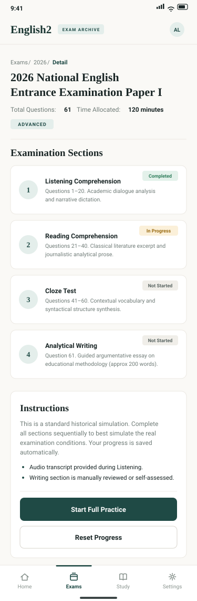
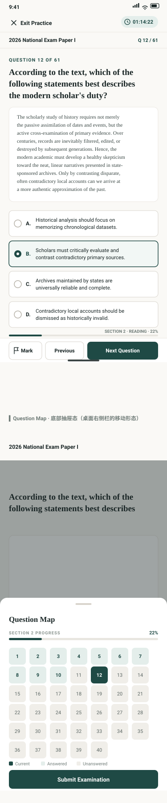
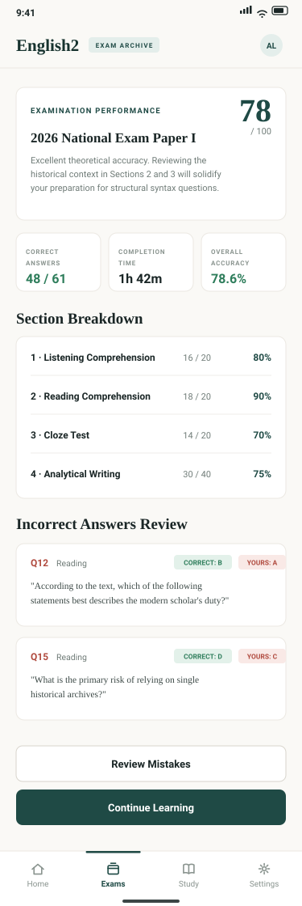

home 首页 · 375×1120

顶部导航收进底部标签栏；主按钮改全宽纵排；「Your Performance」由右栏卡片下移为整宽卡片。
exam-list 真题列表 · 375×1040

表格重排为卡片列表：年份 + 状态徽章 + 进度条 + Open 按钮；搜索与年份筛选改为整宽控件。
exam-detail 试卷详情 · 375×1140

Section 卡纵排（序号圆徽即题组编号）；「Instructions」由右栏下移为整宽卡片，按钮纵排全宽。
practice 练习 · 375×1800（两态）

第一屏：主答题屏，右侧栏收起，题号/进度前移，底部 sticky 操作条（Mark / Previous / Next）。 第二屏：Question Map 底部抽屉态（7 列题号格子 + 图例 + Submit）。
result 考试结果 · 375×1120

大分数保持对角构图；三张统计卡并排放小；Breakdown 与错题回顾由双栏改纵排；操作按钮全宽。